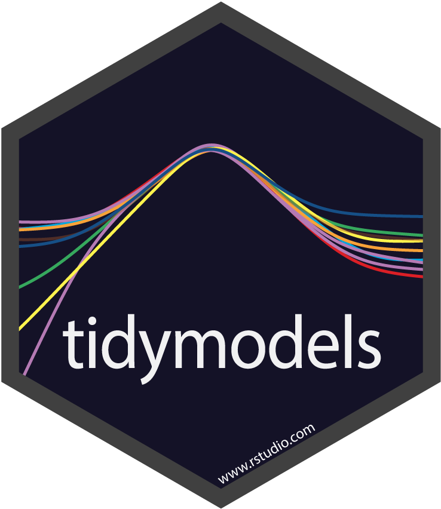

tidymodels is a “meta-package” for modeling and statistical analysis that share the underlying design philosophy, grammar, and data structures of the tidyverse.
It includes a core set of packages that are loaded on startup:
broomtakes the messy output of built-in functions in R, such aslm,nls, ort.test, and turns them into tidy data frames.dialshas tools to create and manage values of tuning parameters.dplyrcontains a grammar for data manipulation.ggplot2implements a grammar of graphics.inferis a modern approach to statistical inference.parsnipis a tidy, unified interface to creating models.purrris a functional programming toolkit.recipesis a general data preprocessor with a modern interface. It can create model matrices that incorporate feature engineering, imputation, and other help tools.rsamplehas infrastructure for resampling data so that models can be assessed and empirically validated.tibblehas a modern re-imagining of the data frame.tunecontains the functions to optimize model hyper-parameters.workflowshas methods to combine pre-processing steps and models into a single object.yardstickcontains tools for evaluating models (e.g. accuracy, RMSE, etc.)
There are a few modeling packages that are also installed along with tidymodels (but are not attached on startup):
tidypredicttranslates some model prediction equations to SQL for high-performance computing.tidyposteriorcan be used to compare models using resampling and Bayesian analysis.tidytextcontains tidy tools for quantitative text analysis, including basic text summarization, sentiment analysis, and text modeling.
To install:
require(devtools)
devtools::install_github("tidymodels/tidymodels")When loading the package, the versions and conflicts are listed:
library(tidymodels)## Registered S3 method overwritten by 'xts':
## method from
## as.zoo.xts zoo## ── Attaching packages ─────────────────────────────────────────────────────────────────────────────────────────────── tidymodels 0.0.3 ──## ✔ broom 0.5.2 ✔ purrr 0.3.3
## ✔ dials 0.0.3.9001 ✔ recipes 0.1.7.9001
## ✔ discrim 0.0.1 ✔ rsample 0.0.5
## ✔ dplyr 0.8.3 ✔ tibble 2.1.3
## ✔ ggplot2 3.2.1 ✔ tune 0.0.0.9003
## ✔ infer 0.5.0 ✔ yardstick 0.0.4
## ✔ parsnip 0.0.3.9001## ── Conflicts ────────────────────────────────────────────────────────────────────────────────────────────────── tidymodels_conflicts() ──
## ✖ purrr::discard() masks scales::discard()
## ✖ dplyr::filter() masks stats::filter()
## ✖ dplyr::lag() masks stats::lag()
## ✖ ggplot2::margin() masks dials::margin()
## ✖ dials::offset() masks stats::offset()
## ✖ recipes::step() masks stats::step()